January Papers: Great Teachers & Beyond Chinchilla
For the research community, 2023 was dominated by large transformers and the associated challenges with training, tuning and deploying them. This trend has continued into 2024, with January seeing some particularly useful developments in the area of efficient training.
Google DeepMind's work on active learning and MosaicML's work on updated scaling laws, stood out to us as particularly noteworthy. The latter paper updates the influential Chinchilla scaling laws to account for the additional cost of inference — a key practical consideration that has influenced models like Llama & Mistral.
While scaling laws assume a fixed architecture, there are also benefits to be gained by tweaking model design. Nvidia demonstrate this in their paper on diffusion model training dynamics, where they make various stability-inducing changes (we did something similar in our unit scaling paper). Finally, we note a remarkable application of LLMs to the problem of geometry solving, which had previously appeared too data-constrained and reasoning-dependent for current AI to solve.
We hope you enjoy this month's papers as much as we did! If you have thoughts or questions, please reach out to us at @GCResearchTeam.
Bad Students Make Great Teachers: Active Learning Accelerates Large-Scale Visual Understanding
The key idea
Co-training a small model with a large model is an efficient strategy for filtering datasets to save on overall training costs.
Background
During training, it is wasteful to spend time computing low-magnitude or high variance gradients that will contribute little to a weight update after averaging and accumulating. How do you go about detecting such examples?
An obvious method for low-magnitude gradients would be to compute the loss for all of the elements in your batch and select only the proportion \(p\) with the largest values to compute gradients for. For a fixed-size dataset we would get a \(1-(1+2p)/3\) reduction in FLOPs, e.g., throwing away \(1/2\) of your samples results in a \(1/3\) decrease in FLOPs. This kind of approach is good at eliminating "easy" examples, it is not so good at eliminating unhelpful noisy examples.
More sophisticated approaches try to formalise a learnability criterion to select examples that are neither too easy nor too hard (noisy) to predict, e.g., reproducible holdout loss selection:
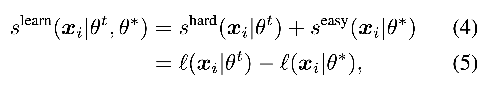
with the score defining an example as "learnable" if the model being trained has high loss for the example and a pretrained reference model has low loss.
When accounting for the cost of training and inference for the reference model, current approaches aren't able to offer a net reduction in training costs.
Their method
The authors propose using a small model alongside the large model, and maintaining two sets of weights for the small model: pretrained reference weights \(\theta_r\) and online "co-trained" weights \(\theta_o\). The learnability score calculated cheaply with these two sets of weights on the full batch is used to select a subset of the batch for training the larger learner model \(\theta_l\).
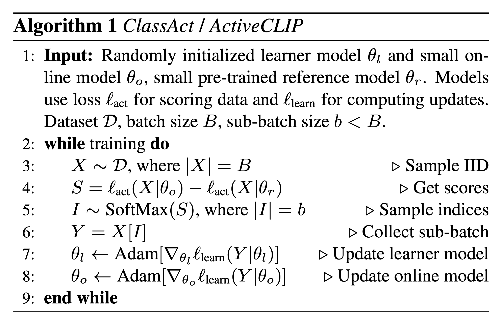
At this point a trade-off emerges. A larger scoring model is more effective at eliminating low-quality examples, but introduces greater overheads to training.
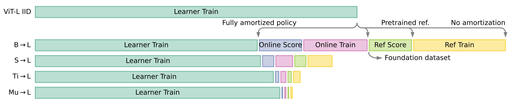
By balancing this trade-off, significant reductions in the overall training cost are possible.
Results
Their experiments are benchmarked against training ViT-L (304M params) on JFT (300M labeled images) for image classification or ViT-B (86M params) on the ALIGN dataset (1.8B image-text pairs) for multimodal image-text alignment.
With ViT-Tiny (5.6M params) as their reference model, they manage to obtain a consistent 25% reduction in training FLOPs to achieve the same downstream task accuracy when pre-trained on JFT ahead of time.
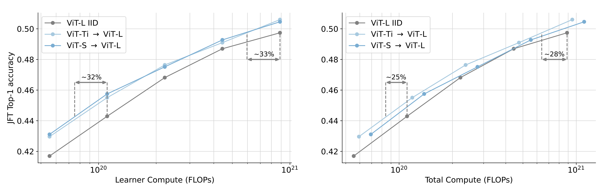
For image-text alignment, where large-scale datasets are typically much noisier, they manage to obtain 48% speedup (not clear if this is total FLOPs or training iterations) to target zero-shot accuracy on Imagenet-1k when pre-training their reference model on a smaller, cleaner multimodal dataset.
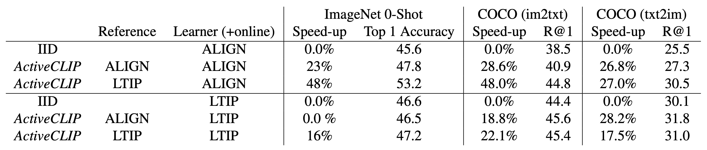
Impressive! Although, their numbers for zero-shot accuracy on ImageNet look a bit low for ViT-B trained on a 1.8B dataset (compare with OpenCLIP).
Takeaways
The FLOP reductions are encouraging. The technique is worth considering when training even larger models on larger, noisier web-scale datasets. It remains to be seen how difficult it will be to realise these FLOP or iteration reductions as wall-clock speed-ups, especially when needing to configure a cluster to support this kind of multi-scale workloads.
Beyond Chinchilla-Optimal: Accounting for Inference in Language Model Scaling Laws
The key idea
The authors modify the scaling laws from the Chinchilla paper to account for the additional cost of running inference on a model once it's been trained. That's the rationale behind models like Llama training on a huge number of tokens — this paper now provides a mathematical justification.
The key conclusion they draw from their analysis is:
LLM practitioners expecting significant demand (~\(10^9\) inference requests) should train models substantially smaller and longer than Chinchilla-optimal.
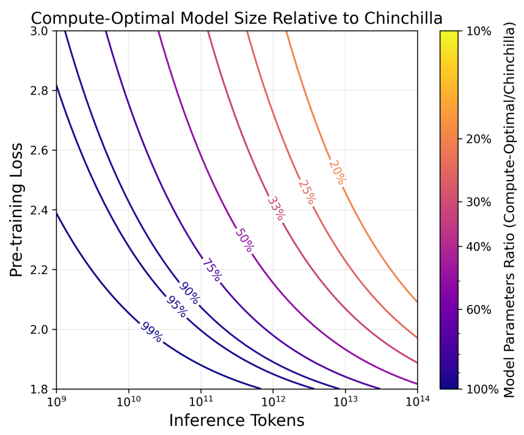
Background
In 2020 OpenAI kicked off a trend of deriving so-called "scaling laws" for transformers, in their paper Scaling Laws for Neural Language Models. They identified a mathematical relationship between the pretraining loss and each of: model size, dataset size and amount of compute.
This was a highly influential paper; used to justify the size of their enormous 175B-parameter GPT-3 model and set a precedent that other 100B+ LLMs would follow in the next couple of years. Their conclusion:
optimally compute-efficient training involves training very large models on a relatively modest amount of data.
In 2022 DeepMind released their Chinchilla model, in a paper that revised OpenAI's scaling laws, rightly suggesting you should train smaller models on more data than originally claimed.
But this wasn't the end of the story. Meta's recent Llama models are trained with an even lower params-to-tokens ratio than Chinchilla. Versus GPT-3, the smallest Llama 2 model uses 25x fewer parameters, but over 6x more data.
Why is this the case? Do we need yet another adjustment to our scaling laws?
Their method
The problem the Llama designers are accounting for with their "over-trained" small models is that of inference costs. Practically speaking, it's easier and cheaper to serve a small model than a large one.
In this paper the authors modify the Chinchilla scaling laws to account for inference costs. Given an expected number of inference tokens and a target model quality (i.e. loss), their new compute-optimal formula states how many parameters and training tokens should be used.
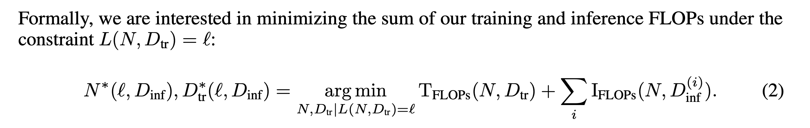
Results
This formula reduces the total compute (training + inference) required, relative to the original Chinchilla rules:
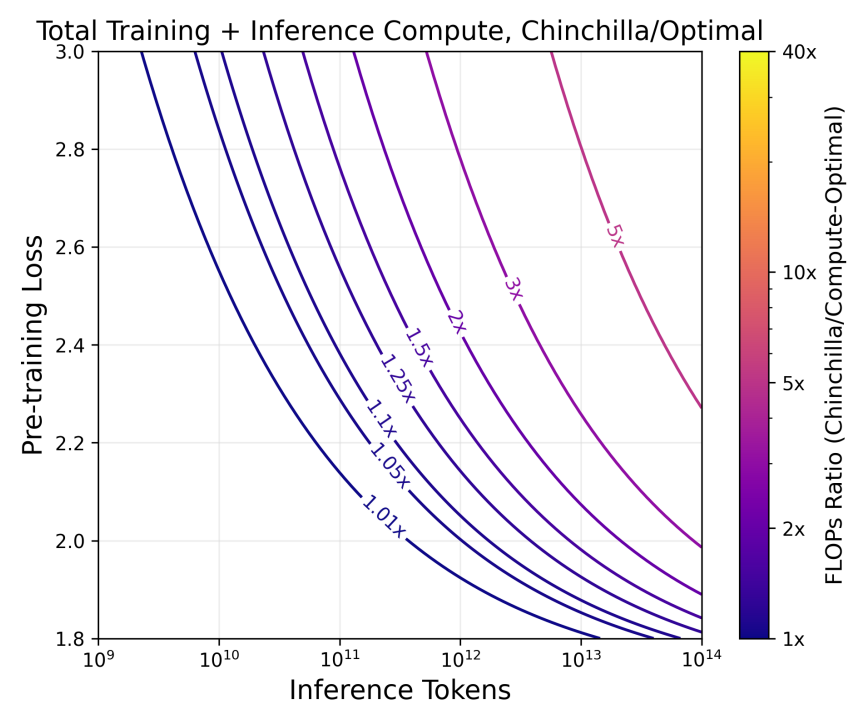
This is an improvement, but there's still a considerable gap between this and the "real world" costs of running such a model. The above doesn't account for:
- Inference vs training hardware utilisation
- The ratio of prefill to generation for inference
- Quantisation for inference
- Different inference hardware
To address these points, the authors introduce a second cost-optimal formula, which accounts for the costs, hardware utilisation and number of tokens at different stages. This makes the model much more realistic and gets closer to the approach adopted by Llama.
Takeaways
Of course, one can never know ahead of time how many requests a model will be used for, so there are limits to this approach. It also doesn't account for some practical benefits of smaller models (easier to fit on a single chip, lower latency). Nevertheless, this is still a much-improved model of the real-world costs of practical LLM use.
Analyzing and Improving the Training Dynamics of Diffusion Models
The key idea
The architecture of diffusion models should be modified to ensure training signals are stable and predictable. This leads to a significant improvement in the quality of generated images.
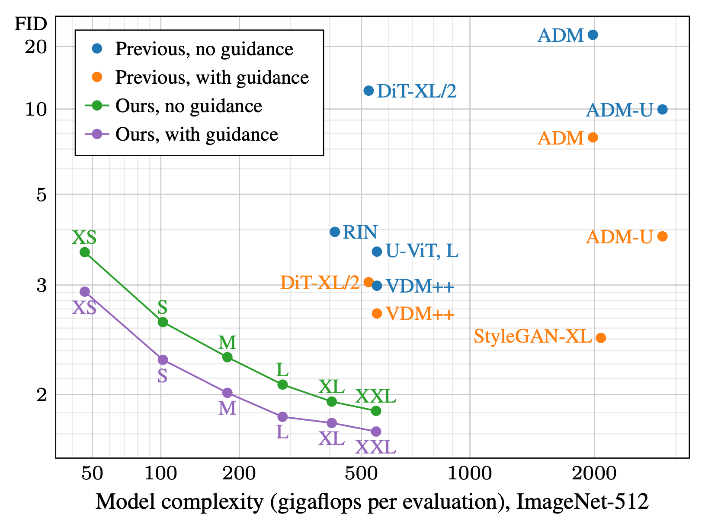
The paper also introduces a second innovation: post-hoc EMA. To get the best final diffusion model it's typical to take the exponential-moving-average (EMA) of the weights of the model throughout training. This "EMA version" of the model is usually something you build up during training, giving you one chance to get the right exponential weighting. The authors introduce a neat trick to re-construct any desired EMA weighting after training.
Their method
Training large diffusion models is often challenging due to inherently noisy training signals. The authors set out the following criteria to address this:
To learn efficiently in such a noisy training environment, the network should ideally have a predictable and even response to parameter updates.
Almost all current ML models fail to satisfy this. The paper suggests that this limits the performance of some models because of complex interactions between training dynamics and hyperparameters / architecture.
To address this, they modify their network to ensure constant magnitudes of activations, weights and updates in expectation. This is almost identical to the objective set out in Graphcore Research's own unit scaling paper. A key difference here is that whereas unit scaling only satisfies this criterion at the beginning of training, they aim to maintain it more strictly throughout.
Their implementation proceeds through a series of steps (or "configs") which they test / ablate at each stage. This is a great feature of the paper — we can see how useful each change is, justifying the many different tweaks they introduce.
Results
Their results for each config are as follows:
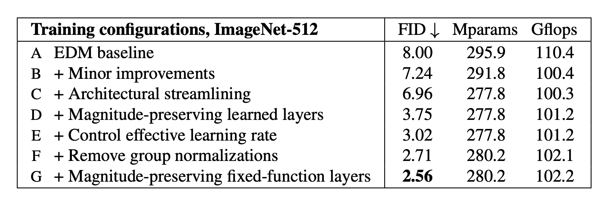
A few details of these configs are worth highlighting. Config D preserves activation magnitudes by dividing weights by their norm in the forward pass. Because of this, the initialisation-scale of the weights doesn't matter and they can get away with using unit-initialisation.
They take this a step further in config E by permanently normalising the weights at every update. Interestingly, to ensure stable weight updates they still recommend normalising the weights a second time in the forward pass, due to the effect this has on the direction of the gradients. Combining all these tricks ensures a unified "effective learning rate" at all points in training, leading to substantial improvements.
In addition, their exponential-moving-average (EMA) trick also makes a big difference to the final performance. Their method works by taking intermediate moving-averages and linearly combining them after training, to approximate arbitrary-weight schedules:
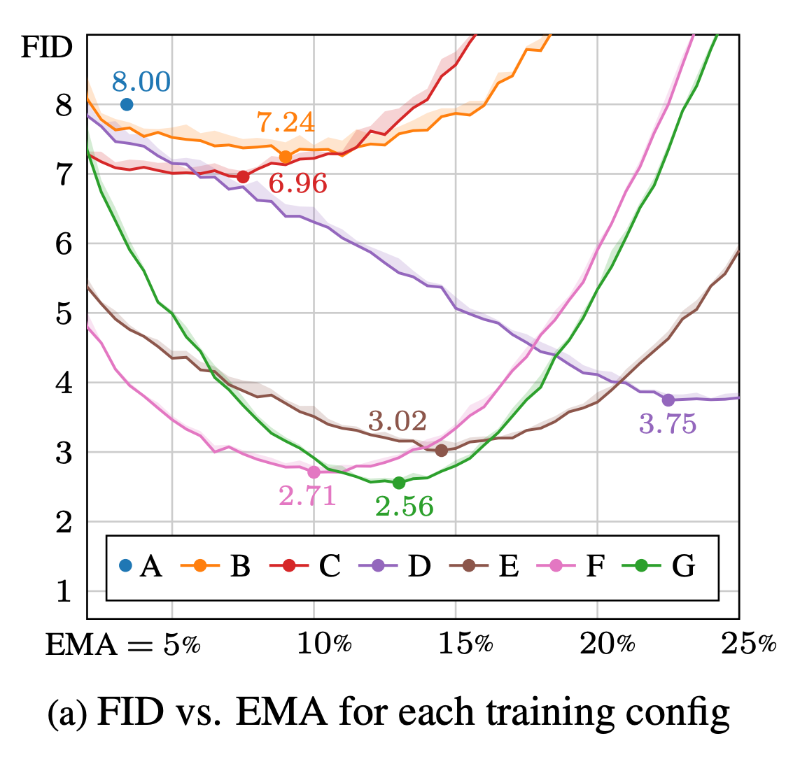
It's clear that getting the schedule just right is important, and also hard to predict ahead of time. Until now the only option has been an expensive sweep, doing full training runs with different weightings. This innovation now makes the job of constructing the EMA substantially cheaper and easier — a big win for the community.
Solving olympiad geometry without human demonstrations
The key idea
ML approaches to mathematical theorem proving are bottlenecked by the scarcity of training data. The first contribution made by the authors is the designing of a procedure to generate a large synthetic dataset of Euclidean geometry theorem proofs by means of a traceback algorithm driven by a symbolic deduction engine.
This dataset is then used to train AlphaGeometry, a hybrid model with an LLM providing suggestions to a symbolic engine, the first computer program to surpass the average level of International Mathematical Olympiad contestants.
Background
Classic geometry proofs extensively rely on auxiliary constructions (e.g. drawing the bisector of an angle or constructing the midpoint of a line segment), on top of the constructions explicitly provided in the statement of the theorem. Symbolic deduction engines for automated theorem proving are based on hard-coded search heuristics and struggle with auxiliary constructions, which effectively introduce an infinite number of branching points in the search tree.
While LLMs, on their own, perform poorly on theorem proving (with GPT-4 having a 0% solve rate on the set of geometry problems used for benchmarking in the paper), they have shown promise in generating exogenous proof terms, such as geometric auxiliary constructions, that can be used to restrict the search space of deduction engines. However, the difficulties and costs of translating human proofs into machine-verifiable formats strongly limit the amount of data available to train or fine-tune deep-learning models.
Their method
Synthetic dataset of theorem proofs
A set \(P\) of theorem premises is randomly sampled and then passed to a deduction engine, which infers new statements from them using its forward deduction rules. This generates a directed graph of inferences; any node \(N\) can then be seen as the conclusion of a series of logical steps represented by its dependency subgraph \(G(N)\), which can be traced back to the minimal subset of premises \(P(N) \subset P\) necessary to reach the conclusion.
The triple \((P(N)\), \(N\), \(G(N))\) is a synthetic example of a theorem, in the form (premises, conclusion, proof). The key step is then to identify auxiliary constructions among the premises \(P(N)\): they are the premises that involve geometric constructions that are not necessary to state the conclusion \(N\) (while being necessary to prove it!) For this reason, such premises are moved from \(P(N)\) to the proof \(G(N)\).
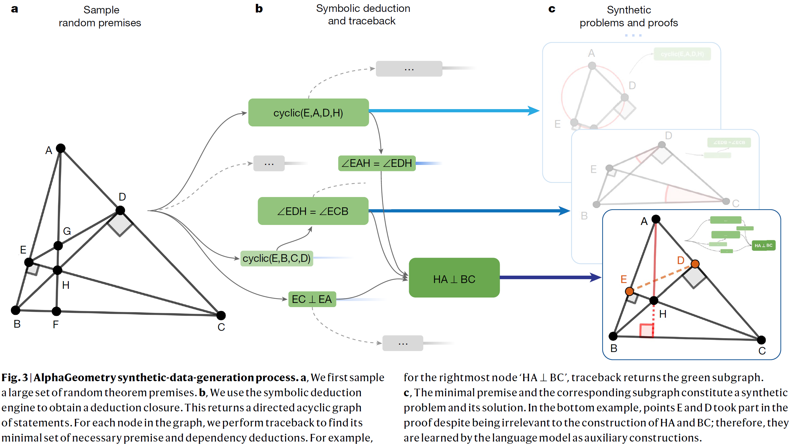
AlphaGeometry
A transformer-based language model is trained from scratch on the serialized strings '\(P(N)\)-\(N\)-\(G(N)\)', learning to generate a proof conditioned on premises and a conclusion. Since auxiliary constructions have been moved to \(G(N)\), the model crucially learns to perform them as intermediate steps in a proof.
In AlphaGeometry, the resulting LLM is used to support a classical symbolic deduction engine. Whenever the engine is unable to reach the theorem conclusion, the LLM generates one sentence conditioned on the premises, all the deductions made by the engine so far and the desired conclusion. This extra sentence is passed back to the symbolic engine to expand (and steer) its search.
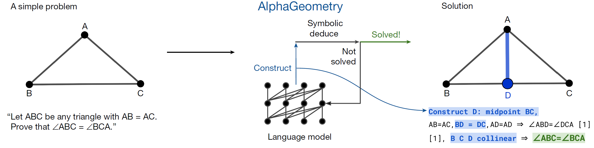
Results
The synthetic dataset generated by the authors contains 100 million theorems with variable proof lengths, 9% of which have auxiliary constructions. The quality of data is allegedly robust, rediscovering many non-trivial geometric theorems from the literature.
Experiments are conducted on the set of 30 plane Euclidean geometry problems from the International Mathematical Olympiad (IMO) competitions since 2000 that could be represented in a compatible format. AlphaGeometry achieves its best performance when pre-trained on the whole dataset of synthetic proofs and then fine-tuned on the subset of proofs which have auxiliary constructions, correctly solving 25 problems. This is 15 more than the previous computer algebra state-of-the-art, coming very close to the average score of a gold-medalist.
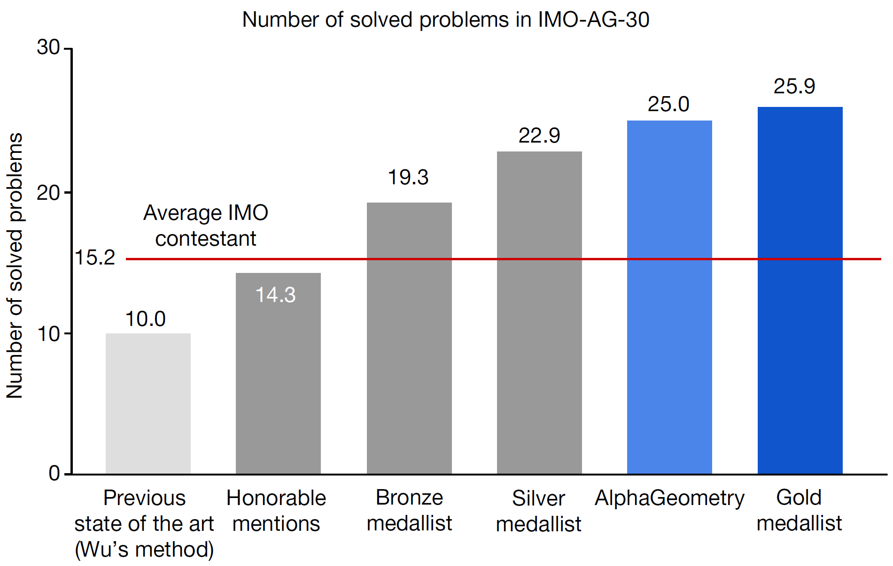
Takeaways
The paper is a brilliant example of how synthetic data can be leveraged to unleash the full power of LLMs in domains, like theorem proving and pure mathematics in general, which have been up to now more impermeable to ML advancements due to scarcity of data.